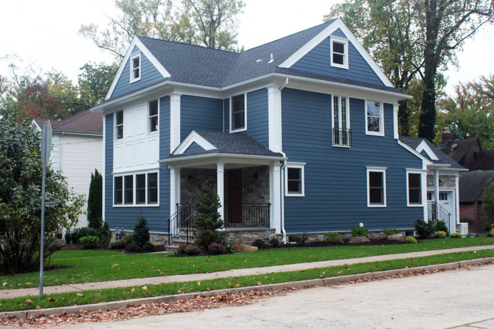
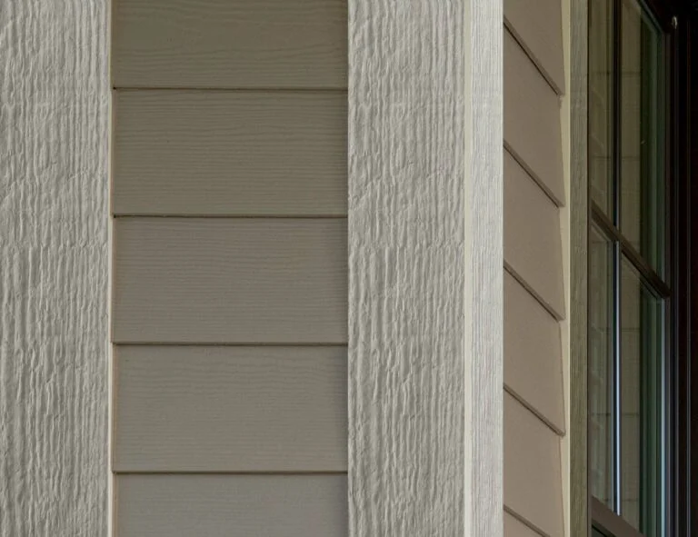
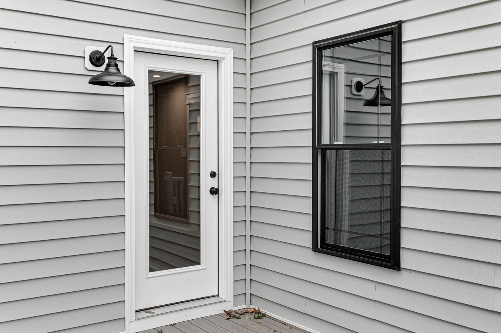

Vermont's climate is one of the most demanding for exterior siding in the Northeast. Freeze-thaw cycling stresses every joint and fastener. High moisture seasons test every lap and penetration. UV at Vermont's elevation fades inferior products faster than homeowners expect.
Forthright installs residential siding with the moisture management details that determine whether a siding job lasts 40 years or starts showing problems in 10 — proper building membrane, pan flashing at every window and door, and rainscreen drainage on fiber cement and engineered wood installations.
Residential Siding Products We Install
James Hardie Fiber Cement
HardiePlank lap siding, HardiePanel vertical siding, and HardieShingle for Vermont homes. Rot-proof, impact-resistant, and holds paint 10–15 years between maintenance cycles. 30-year product warranty. Our most recommended product for Vermont homes.
LP SmartSide
Engineered wood siding treated against rot, insects, and fungal growth. Strong alternative to James Hardie for homeowners who prefer the look and feel of real wood. Competitive warranty. Appropriate for Vermont's climate with proper installation details.
Vinyl Siding
Cost-effective option for budget-conscious projects. We install vinyl where it's the right fit — sheltered locations, budget renovations, homes being prepared for sale. We'll be honest if we think a different material makes more sense for your situation.
Full Tear-Off & Residing
We typically recommend full tear-off on homes over 15 years old — it lets us inspect the sheathing and building membrane underneath, address any moisture damage before it's covered up again, and install proper house wrap and rainscreen detailing. We assess each project and give you a straight answer.

What Proper Vermont Siding Installation Includes
- New building membrane (house wrap) with all seams taped, integrated with window and door flashing
- Pan flashing at every window and door sill — the most common moisture failure point we find on old siding tear-offs
- Rainscreen drainage mat between building membrane and fiber cement or engineered wood — standard on all our fiber cement installs
- Continuous metal transition flashing at all horizontal breaks, roof-wall intersections, and band boards
- 6" minimum clearance from grade and 1" from roofing surfaces per James Hardie installation requirements
- Stainless steel or hot-dipped galvanized fasteners — fiber cement requires specific fastener types; we don't substitute

We include a 2-year workmanship warranty on all residential siding installations. The manufacturer warranty on James Hardie and LP SmartSide runs 30 years on the product and is registered at project closeout.

Frequently Asked Questions
For a typical Vermont single-family home, fiber cement siding (James Hardie or LP SmartSide) installed with full tear-off runs approximately $12,000 to $30,000+ depending on home size, complexity, number of windows and doors, and condition of the sheathing underneath. Vinyl siding runs less — typically $7,000 to $16,000 for the same homes. These are complete installed costs including tear-off, building membrane, flashing, trim, and our 2-year workmanship warranty. We provide firm fixed-price bids after a site assessment.
Both are excellent products for Vermont's climate. James Hardie is the category leader with a longer track record, slightly harder (more impact-resistant), and available in a wider range of factory-primed colors. LP SmartSide is an engineered wood product that installs more like traditional wood siding, has a competitive warranty, and is often preferred by homeowners and contractors who find the Hardie material heavier and harder to cut on site. For most Vermont homes, we recommend James Hardie as the default. For homeowners who prefer the look and workability of wood siding, LP SmartSide is a strong choice. We carry both and are happy to show you samples.
On homes over 15 years old, we almost always recommend full tear-off. Vermont's freeze-thaw climate drives moisture into wall assemblies repeatedly over decades — hidden rot, failed house wrap, and moisture damage in the sheathing are very common on older homes. Installing over them lets problems continue undetected. Full tear-off lets us inspect the sheathing, replace damaged sections, install new building membrane properly, and ensure the flashing details are done correctly. We assess each project at the estimate visit and tell you what we find.
2 years on all residential siding installations. This covers installation defects — any failure attributable to how the siding was installed, not material defects (covered by the manufacturer's 30-year product warranty) or storm damage. At project closeout, we register the manufacturer warranty with James Hardie or LP SmartSide so the full product coverage is activated in your name.